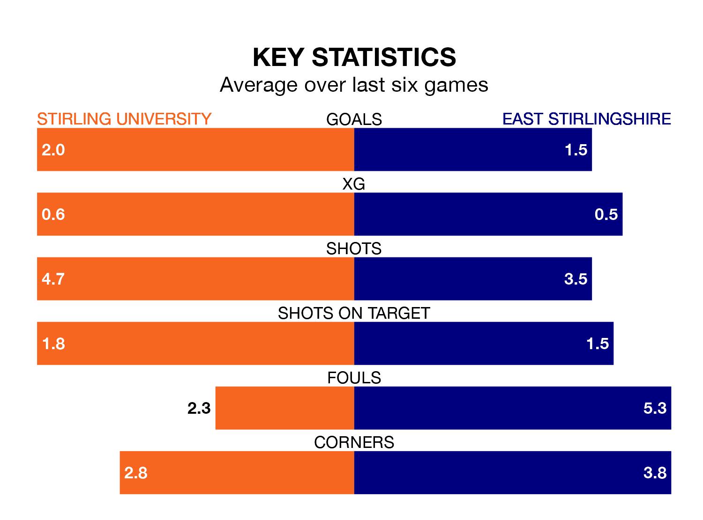

East Stirlingshire travel to the Forthbank Stadium for Saturday's match against Stirling University looking to bounce back from defeat last time out in Highland and Lowland Football Leagues.
The Shire, who sit zero in the league after 17 games, fell to a 4-3 home defeat to Bo'ness United on November 18.
They face a Stirling University side who picked up a win in their last match, a 4-0 victory against BSC Glasgow, and who sit zero in the table.
Stirling University are in fantastic form in Highland and Lowland Football Leagues, with five wins and one loss from their last six games.
With a win and a draw over that period, East Stirlingshire's form is much worse – they have taken four points from 18, compared to the hosts' 15.
In the last five years, Stirling University and East Stirlingshire have played each other on eight occasions. They won three each, and they drew twice.
On average, Stirling University scored 1.2 goals and the Shire 1.6 in those matches.
Their last meeting was on August 23, when Stirling University won 3-2 away.
With 21 goals in 16 games so far this season, Stirling University are the league's joint--2th-lowest scorers with 1.3 goals per game. But they are conceding fewer than average too, letting in 21 goals at a rate of 1.3 per game.
The Shire are also below average scorers, with 1.4 goals per game, compared to a league average of 1.7. They have conceded 1.9 goals per game.
